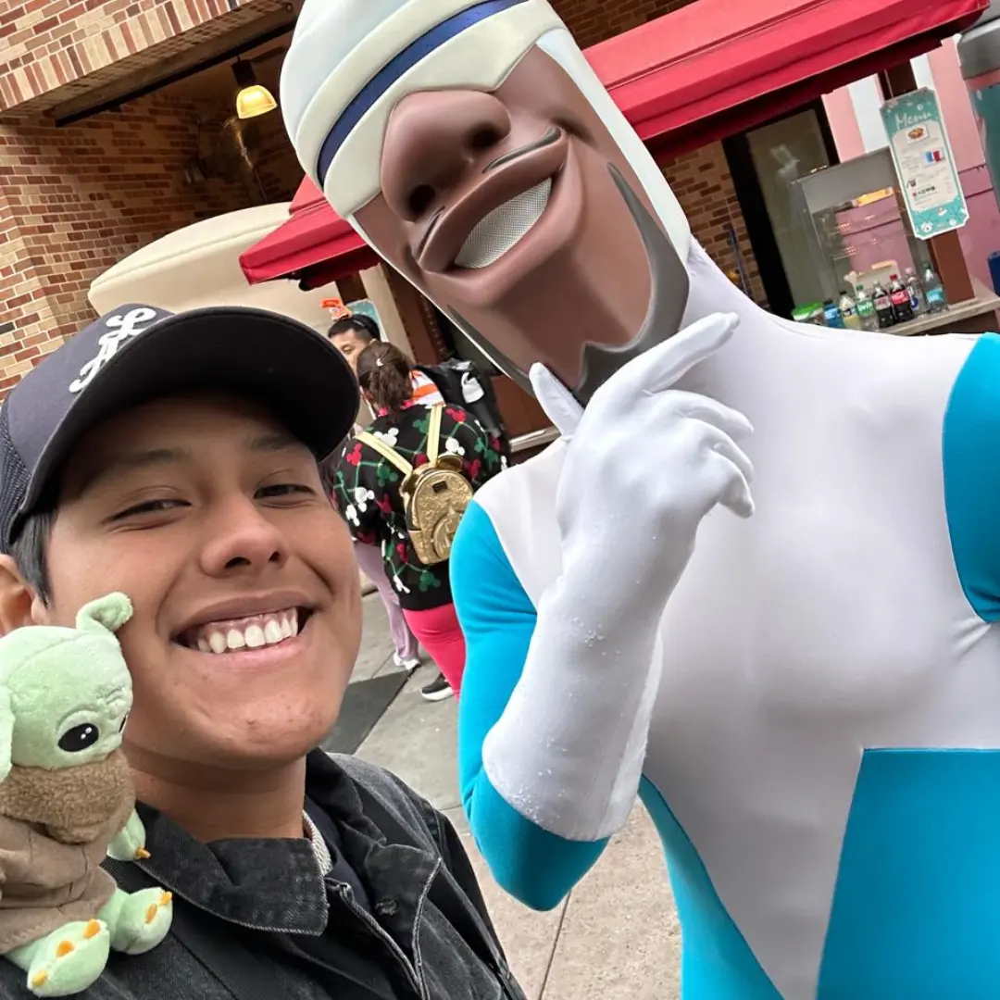

Nosotros
Tecnología cercana para negocios que quieren avanzar.
Avora nace de una idea simple: la innovación digital no debería quedarse solo en las grandes empresas. Construimos software con criterio, diseño y velocidad para llevar esa ventaja a equipos que necesitan moverse mejor.

Somos tres perfiles complementarios pensando producto, tecnología y experiencia desde el mismo lugar: resolver problemas reales con herramientas claras.
Nuestra historia
Empezamos para acercar lo digital a donde todavía no llega.
Vimos que muchas organizaciones tienen problemas importantes, procesos lentos o ideas valiosas, pero no siempre acceso a la tecnología que sí usan las compañías grandes. Avora surge para cerrar esa distancia: escuchar bien, diseñar con intención y construir soluciones digitales que se sientan modernas sin volverse inaccesibles.
Nuestro enfoque combina cercanía humana con ejecución técnica. Preferimos trabajar con claridad, entender el negocio antes de escribir código y crear productos que puedan crecer junto con cada cliente.
Equipo
Las personas detrás de Avora.
Tres formas distintas de pensar producto, tecnología y crecimiento, unidas por la misma intención: crear soluciones digitales claras y útiles.

Marketing Digital y Programador
José Carlos Cuj Silva
Ingeniero Mecatrónico FIME UANL
"No me conformo con imaginar cosas; necesito construirlas."
Trabajemos juntos
Contactar a Avora